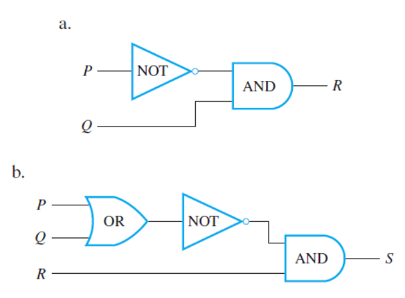
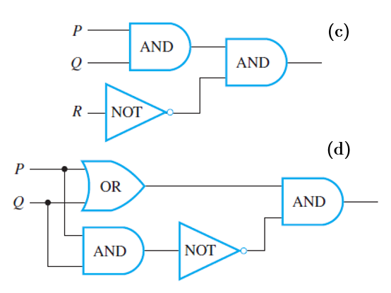
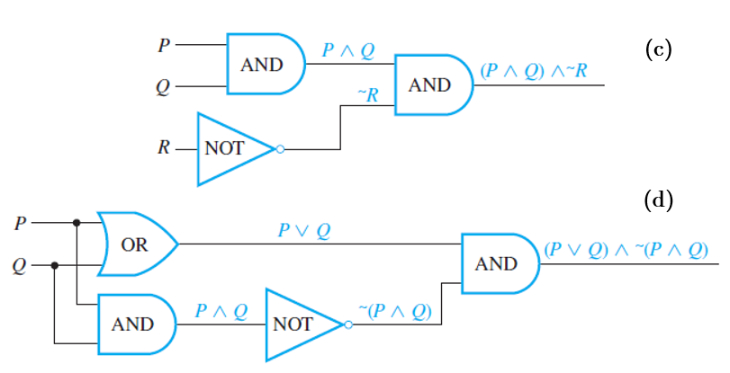
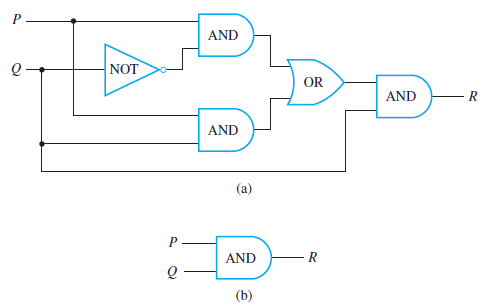
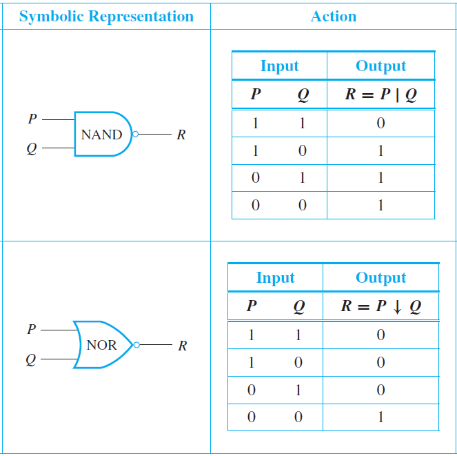

TOPIC 2.2
Digital Circuits and Logic Gates
TOPIC 2.2
Digital Circuits and Logic Gates
2.2 Digital Circuits and Logic Gates
Lesson Objectives
- Relate concepts in logic with circuit designs.
- Know the logic gates and their functions.
- Analyze input/output tables for a digital circuit.
- Design digital circuits appropriately given a Boolean expression and an input/output table.
- Identify equivalent digital circuits and simplify combinatorial circuits.
Introduction
In the late 1930s, a young M.I.T. graduate student named Claude Shannon noticed an analogy between the operations of switching devices, such as telephone switching circuits, and the operations of logical connectives. He used this analogy with striking success to solve problems of circuit design and wrote up his results in his master’s thesis, which was published in 1938.
The drawing below (left) shows the appearance of the two positions of a simple switch. When the switch is closed, current can flow from one terminal to the other; when it is open, current cannot flow. Imagine that such a switch is part of the circuit shown below (right). The light bulb turns on if, and only if, current flows through it. And this happens if, and only if, the switch is closed.
Now consider the more complicated circuits below.
In the circuit above (left), current flows and the light bulb turns on if, and only if, both switches P and Q are closed. The switches in this circuit are said to be in series. In the circuit above (right), current flows and the light bulb turns on if, and only if, at least one of the switches P or Q is closed. The switches in this circuit are said to be in parallel.
Observe that if the word "on" is replaced by $$T$$ and "off" is replaced by $$F$$, we obtained the truth tables for "and" and "or". Consequently, the switching circuits are said to correspond to the logical expressions $$P \wedge Q$$ and $$P \vee Q$$.
More complicated circuits corresponds to more complicated logical expressions. Engineers continue to use the language of logic when they refer to values of signals produced by an electronic switch as being "true" or "false". They generally use the symbols 1 and 0 rather than T and F to denote these values. The symbols 0 and 1 are called bits, short for binary digits. This terminology was introduced in 1946 by the statistician John Tukey.
Types of Logic Gates
An efficient method for designing more complicated circuits it to build them by connecting less complicated logic gates. Three such gates are known as NOT-gate (or inverter), AND-gate, and OR-gate. The following diagrams summarize their symbolic representations and input/output tables.
Rules for a Combinatorial Circuit:
- Never combine two input wires in one logic gate.
- A single input wire can be split partway and used as input for two separate gates.
- An output wire can be used as input.
- No output of a gate can eventually feed back into that gate.
Input/Output Tables of Circuits
If you are given a set of input signals for a circuit, you can find its output by tracing through the circuit gate by gate. Consider the two circuits below and check the examples that follow.
To construct the entire input/output table for a circuit, trace through the circuit to find the corresponding output signals for each possible combination of input signals.
Boolean Expressions of Circuits
As noted earlier, One of the founders of symbolic logic was an English mathematician George Boole. In his honor, any variable, such as a statement variable or an input signal, that can take one of only two values is called a Boolean variable. An expression composed of Boolean variables and the connectives $$\sim$$, $$\wedge$$, $$\vee$$ is called Boolean expression.
Consider the two circuits below and check the examples that follow.
Trace through the circuit from left to right, indicating the output of each gate symbolically, as shown below.

The final expression obtained in circiut (d), (P ∨ Q)∧ ∼(P ∧ Q), is the expression for exclusive
or: P or Q but not both.
For circuit (c), observe that its output is 1 for exactly one
combination of inputs $$(P = 1, Q = 1,$$ and $$R = 0)$$ and is 0 for all other combinations of
inputs. For this reason, the circuit can be said to “recognize” one particular combination
of inputs. The output column of the input/output table has a 1 in exactly one row and 0’s
in all other rows.
A recognizer is a circuit that outputs a 1 for exactly one particular combination of input signals and outputs 0's for all other combinations.
Designing Digital Circuits
To costruct a circuit that corresponds to a given Boolean expression:
- Write the input variables in a column on the left side of the diagram.
- Then go from the right side of the diagram to the left, working from the outermost part of the expression to the innermost part.
- Place appropriate gates for every Boolean operator you encounter until all the gates are assigned for the expression placed, arriving at the starting point.
To costruct a circuit that corresponds to a given Input/Output Table, we put several recognizers together in parallel. Specifically, we do the following:
- Consider only the rows or input combinations that yield an output of 1.
- For each such row, construct an AND expression of the input states.
- Once you have the AND expression for all the rows, join them by OR expressions. Enclose each imput combination in a parenthesis to avoid ambiguity in your Boolean expression.
- Then construct the circuit based on the Boolean expression you obtained.
The Boolean statements for each row yielding an output of 1 are
The Boolean expression corresponding to the entire circuit is
The resulting circuit based on the Boolean expression obtained is
Simplifying Digital Circuits
Aside from being able to design combinatorial circuits, we must know how to simplify or reduce them as well by finding an equivalent circuit or its corresponding Boolean expression. This is where we need to apply the Boolean identities and/or propositional laws to be able to properly modify our Boolean expressions.
Two digital logic circuits are equivalent if, and only if, their input/output tables are identical.
Consider the two circuits below. Construct Input/output tables to compare the behaviors of the two circuits.
As you notice in the two circuits, both of them produce an output of 1 for exactly one imput combination which both of them share: $$P=1$$ and $$Q=1$$. Thus these two circuits do the same job in the sense that they transform the same combinations of input signals. into the same output signals. Yet circuit (b) is simpler than circuit (a) in that it contains many fewer logic gates. Thus, as part of an integrated circuit, it would take less space and require less power.
In other words, since they have equal input/output tables, their Boolean expressions are also concluded to be logically equivalent. In general, you can simplify a combinational circuit by finding the corresponding Boolean expression, using the properties listed in the summary of logical equivalences to find a Boolean expression that is shorter and logically equivalent to it (when both are regarded as statement forms), and constructing the circuit corresponding to this shorter Boolean expression.
(1) Circuit (a): $$((P∧ ∼Q) ∨ (P ∧ Q)) ∧ Q$$ ; Circuit (b): $$P ∧ Q$$
(2) $$((P ∧ ∼Q) ∨ (P ∧ Q)) ∧ Q$$
$$≡ (P ∧ (∼Q ∨ Q)) ∧ Q$$ by the distributive law
$$≡ (P ∧ (Q ∨ ∼Q)) ∧ Q$$ by the commutative law for $$∨$$
$$≡ (P ∧ t) ∧ Q$$ by the negation law
$$≡ P ∧ Q$$ by the identity law.
NAND and NOR Gates
Another way to simplify a circuit is to find an equivalent circuit that uses the least number of different kinds of logic gates. Here are some additional useful gates to the ones that are presented earlier:
- A NAND-gate is a single gate that acts like an AND-gate followed by a NOT-gate. (logical symbol | "Sheffer stroke")
- A NOR-gate is a single gate that acts like an OR-gate followed by a NOT-gate. (logical symbol ↓ "Peirce arrow")
The table below summarizes the actions of NAND and NOR gates.
It can be shown that any Boolean expression is equivalent to one written entirely with Sheffer strokes or entirely with Peirce arrows. Thus any digital logic circuit is equivalent to one that uses only NAND-gates or only NOR-gates.
(1) $$∼P$$
$$≡ ∼(P ∧ P)$$ by the idempotent law for $$∧$$
$$≡ P | P$$ by definition of $$|$$.
(2) $$P ∨ Q$$
$$≡ ∼(∼(P ∨ Q))$$ by the double negative law
$$≡ ∼(∼P ∧ ∼Q)$$ by De Morgan’s laws
$$≡ ∼((P | P) ∧ (Q | Q))$$ by part (1)
$$≡ (P | P) | (Q | Q)$$ by definition of $$|$$.
Questions or clarifications on this topic? Click here to place your feedback. Your messgages will be highly appreciated.